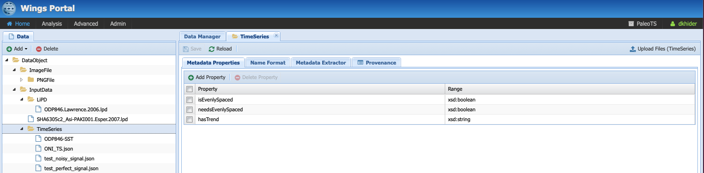
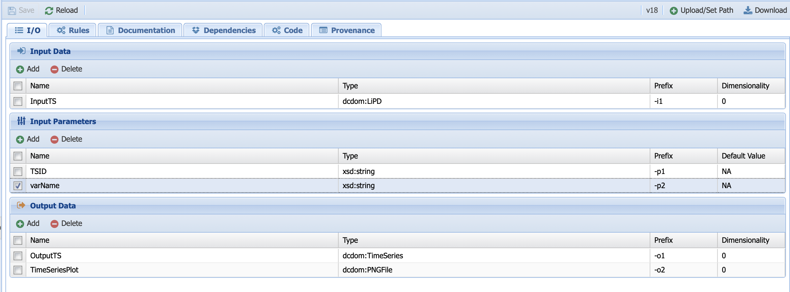

Working with PaleoTS: a Tutorial¶
If you haven’t done so already, we recommend you read the The philosophy behind PaleoTS first.
WINGS login¶
PaleoTS is a specific application of the autoTS ecosystem. You can either create an account on our server or install WINGS and the PaleoTS domain on your own system. If using our server, go to the WINGS portal. You will be presented with this login screen:
Click on login in the top right corner and enter you credentials on the next page. Once you are logged in, you should see the following:
Make sure that the PaleoTS domain is selected (green square on the image above). If not, click on the name of the domain at the top (green square) and select PaleoTS. You can make PaleoTS the default domain by selecting it in the menu (red circle on the figure above) and click on Set Default.
The rest of this tutorial will show you how to use PaleoTS. We advise completing this tutorial in order once as each step builds on understanding from the previous tutorial step. Please refer to the Terminology section as needed (the relevant terms will be linked in the text for ease of navigation).
Running a workflow¶
Let’s start with running a simple workflow with data already uploaded in the system. In the menu bar, click on Analysis, then Run workflow.
You should land on the following page:
Under the template tabs, you should see a series of workflows, namely (in alphabetical order):
DockerPull-Pyleoclim: This is a special workflow that allows you to get the latest version of the Pyleoclim package <https://pyleoclim-util.readthedocs.io/en/master/>`_. We will talk about its use in the section about updating new components.
ExtractTSFromLiPD: This workflow allows to create a timeseries from an existing dataset stored in the LiPD format.
Extract_Timeseries: This is where the PaleoTS magic happens. This particular workflows senses the data (i.e., is the data evenly-spaced, is there a trend) so the framework can decide which methods are valid. This workflow will run automatically when PaleoTS needs to extract information about the data. If you decide to add more rules, you can modify the code.
LiPDDashboard: This workflows create a dashboard for a specific timeseries stored in a LiPD file.
Point-to-PointCausality: This workflows determines causality between two time series.
Point-to-PointCorrelation: This workflows determines correlation between two time series.
SpectralAnalysis: This workflow pre-processes the data and runs spectral analysis on a timeseries.
WaveletAnalysis: This workflow pre-processes the data and runs wavelet analysis on a timeseries.
XWavelet__Coherence__Analysis: This workflow pre-processes the data and runs coherence analysis between two timeseries.
For this tutorial, let us select the spectral analysis workflow as described in our philosophy:
Let’s first have a look at the workflow:
It is represented as a graph where the nodes correspond to data/parameters (symbolized by rectangles) and computations (symbolized by parallelograms). The links represent how the data flow from computations to computations. In the first step, we instruct to loadTS (the grey box) by taking an InputTS (the blue box, which represents data) and a parameter called TSID (green box) and outputs OutputTS and a plot, TimeSeriesPlot. This single operation with its inputs/outputs is called a workflow component.
What do the colors represent? Parameters are represented in green. For the most part, data are in deep blue. You may notice that two of the data nodes are red. This represent a breakpoint in the workflow, where we instructed PaleoTS to sense the data using the Extract_Timeseries workflow so it can make a decision on how best to proceed. In this particular example, we have two breakpoints: one set before detrending and one before hypothesizing over missing values. Let’s get back to them once we talk about the last color: grey, which represents abstract steps. Abstract steps are replaced by actual executable computations in the planning stage. In other words, we have several ways of performing an operation and the actual computation will depend on the data.
Let’s go back to our breakpoints and have a look at OutputTS6, which is an input to the detrending computation. Pyleoclim has several detrending options: linear, filtering using the Savitzky-Golay filters and substracting the resulting filtered series from the original, and empirical mode decomposition. Linear detrending is only appropriate if (1) there is a trend in the data, and (2) the trend is linear. If there is no trend in the data, we instruct PaleoTS to skip over this component completely. If the trend is linear, then all methods are appropriate (we also added a no removal functions if no detrending is wished). However, if the trend is not linear, then PaleoTS shouldn’t use an algorithm for linear detrending.
Similarly, if the data in OutputTS8 is evenly-spaced in time or the spectral method doesn’t require evenly-spaced datasets, then this step should be skipped altogether.
To do so, components can be annotated with rules that affect the behavior of the workflow. But more on that later. For now, let’s run our first workflow by entering values for our inputs and parameters:
You can do so either by hand (PaleoTS will select datasets appropriate for the type of data the program is accepting; in this case data in either JSON or LiPD format)
or you can let PaleoTS suggest data and parameters by clicking on the two options:
Let’s run with the following inputs:
Here, we selected a perfect sinusoidal signal, with no trend and no missing values. TSID is set to NA (this parameter is only important when using a LiPD file as the input), the method for the frequency vector determination is set to log, the benchmark null hypothesis against a red noise is set to 0.95 (qs), we choose not to remove outliers if any, and we let Pyleoclim decide the best start/end time is interpolation on the time axis is needed by setting to -1 (None in Python).
Now let’s PaleoTS parse all the possible executions by clicking on Plan workflow. You will be presented with the following window:
Under template, PaleoTS lists all the possible executions based on a draw from each of the methods that can be used to compute a certain step. Let’s have a look at the first one:
This workflow looks a little bit different than the abstract workflow we have been working with. First, you should notice that the grey boxes have been replaced by orange ones. This signals that PaleoTS has planned to use a specific method (for instance, detrending with the Savitzy-Golay method and a multi-taper method for spectral analysis) to run the abstract steps of detrending and spectral analysis. Second, most of the workflow is greyed out. That’s because even though PaleoTS is planning to run these methods, it may not actually do so. Remember that if there is no trend or the data is evenly-spaced, then these components should be skipped in the actual execution. So PaleoTS is just informing you that it can, for sure, run the first two steps before sensing the data and revising its execution plan. Also note that PaleoTS sensed that the data is in JSON format rather than LiPD, and therefore chose the appropriate loading function. Finally, you should have noticed that there are more parameters (green boxes). These correspond to the parameters specific to the method. Their values can be changed by double-clicking on the box.
Let’s Run Selected Workflow:
Click on monitor execution (which can also be accessed from Analysis -> Access Runs):
The top panel shows you the status of your executions, allows you to delete some executions or reload to monitor progress.
The bottom panel contains four tabs:
Data shows you your input data and set of parameters for this specific run and all intermediate and final outputs (an output is considered final if it’s not reused by another component, so the plots show in the Ouput tab). To save them on your machine, click on the file name. The save icon allows you to save the data into the system for later re-use as input in another workflow.
Run log: Describes what happened during the runs. If one of the program returns an error, it will be logged there. Or if a workflow is taking longer than expected, a printout can tell you what PaleoTS is working on (in this case, running spectral analysis on the surrogates AR1). In some instances, the logs will inform you that the data already exist and therefore, the step has been skipped. PaleoTS will therefore only execute standardization once for all the workflows. Furthermore, if the data has already been sensed, then the planning will only consider workflow appropriate for the data if reused in another execution.
Template: Shows which abstract workflow was used while:
Executable Workflow shows you what workflow has actually been run! Let’s have a look at it in more details:
The executable workflow contains all the information about the method applied, the parameter values and the name of the output file for reproducibility. Notice that DetrendSG and gkernel are greyed out. This is because the data has no trend and was evenly-spaced so they were skipped at execution time. Notice that the file name for OutputTS8 and OutputTS9 are the same, confirming the skip. All names are unique for a given combination of input data, parameters, and programs (including versions of the programs).
Congratulations! You have run your first analysis with PaleoTS. Feel free to go back and select another of the possible executable workflows.
Note
If you want to run all possible executable workflows for this particular template, select “Plan and Run Workflow”. Note that you will not be able to select specific method parameters in this mode.
Running a workflow with multiple datasets¶
More often that not, we want to run the same workflow on several datasets. In PaleoTS, you can do so by setting the input (InputTS) as a collection. To do so, head to Analysis -> Edit Workflow and select the SpectralAnalysis workflow. Click on InputTS and set “Input should be a collection” to true (red circle).
Once you have done so, you should notice that all the boxes are doubled. It indicates that PaleoTS will run each component for each file in the collection.
Warning
Don’t forget to save the workflow (green box)!!
In some instances, you may also want to run the workflow over a collection of parameters. This can be done in two ways: 1. dot product (nwise) or 2. cross-product. In a dot product, each value of the parameter corresponds to specific dataset. This is useful, for instance, for our TSID parameter, whose value will be unique for specific variable in each LiPD file in the collection. Cross-products are useful to test a set of parameters, for instance, estimating the significance of the spectral peaks at the 90% and 95% confidence level for each of the dataset in the collection.
To set the parameter as a collection, click on it and check Input should be a Collection as true.
To set whether the behavior should be a dot product or a cross-product, first select the component the parameter is an input of. Under the Input Data Combination tab (red circle on the picture below), select the default behavior (xproduct) and then click on Set Op:
Since we want to do a dot product for the loading component (one TSID per file), select nwise.
Repeat the same procedure for the qs parameter, an input to the significance testing component but select xproduct:
Warning
Don’t forget to save the workflow!!
To run the workflow, go to Analysis -> Run Workflow and PaleoTS will prompt you to select multiple files (use command+click or option+click on your computer on the dropdown menu) and enter the parameter values as comma-separated values.
Specializing a workflow¶
In some cases, you may not be interested in running all possible methods corresponding to a specific abstract step. You can either (1) create a new workflow or (2) specialize the template. Let’s look at the second option.
Select the spectral analysis workflow:
And click on the component you wish to select a particular method for. Here, let’s take the Spectral Analysis component. Click on the component and toggle the menu to the desired method.
Understanding data types¶
To construct appropriate workflows, PaleoTS reasons over the type of data that can be added to the system. Each program specifies which type(s) of data is acceptable as input and which type(s) will be returned as outputs.
Let’s have a look at the different types of data PaleoTS is currently working with. Click on Advanced -> Manage Data:
Each folder in the tree represents a type of data (data type). Each subfolder means that a particular data type is a child of the parent folder. In short, they share common characteristics but also differences. The choice of data types is dictated by needs and ease of navigation. So far, all of the inputs/outputs in our workflows are either image files (plots) or JSON files (which contains all our data). Hence, it made sense to create types that correspond to these two file formats.
We also have a special category of “InputData” which can either be a time series stored in JSON format or in LiPD format. Why couldn’t we put time series under JSONFile? We could have. However, separate workflows for each type of files would have been needed since PaleoTS can only reason on ‘loadTS’ if the inputs are of the same type (in this case InputData). So InputData was created for convenience.
Select the folder TimeSeries and have a look at the different tabs:
Under Metadata Properties, three properties are considered: isEvenlySpaced, needsEvenlySpaced, and hasTrend, which are needed to reason over the steps in the workflow. If you click on the Metadata Extractor tab, you should see the following:
Notice that TSMetadataExtraction is selected, which is the component making up the entire Extract_Timeseries workflow that we introduced in the introduction.
Click on test_perfect_signal.json, which is the input we used in our example workflow:
In this case, the metadata has been filled, informing us that the series has no trend and is evenly-spaced.
Warning
Even though the input data has no trend and is evenly-spaced, PaleoTS cannot make a decision about which steps to run from this information alone. Remember that the input data to the detrending function is actually the output of the standardization step. Similarly, the input to the interpolation step is the output of outliers removal. The outlier removal step could cause the output to be unevenly-spaced. As a consequence, PaleoTS would run the imputation step.
Next let’s have a look at the different subtypes of JSONFile. We needed to create them because the computations would be different for different data types. Let’s take our spectral workflow as an example. The first step is to standardize the time series data. This operation implies that a time series is given as an input to the program and a time series is returned at the end. Let’s skip forward to the spectral analysis step. In this case, a time series is given as input but a power spectral density (PSD) is computed and returned as the output. Would you expect to be able to perform the same operation on a PSD than a time series? Not necessarily. As we see in the next workflow step, we perform significance testing on the PSD, which makes no sense for a time series. Similarly, a scalogram plot would look very different from a PSD plot. Hence the same action (e.g., plot) results in different outcomes appropriate for the data type.
If you are familiar with object-oriented programing, you can think of the data types as object on which methods (programs in PaleoTS) are applied. In fact, the data types in PaleoTS are related to the objects in Pyleoclim.
Data types allow PaleoTS to validate a workflow. If you try to chain two methods, then the output of method 1 should be of the same data type as the input of method 2. Otherwise, PaleoTS will inform you that your workflow is invalid.
Do you have to worry about data types? They will come into play in the following context:
Creating new components
Adding Datatypes¶
As you become more familiar with paleoTS, you may find that you want to create your own components and programs for your research needs. In this case, you will need to create new data types. The mechanics of doing so is easy (first click on the top folder you want to create a data type for then click on the Add button above the folders). However, you need to decide whether to create a brand new data type (a subfolder of DataObject; by default everything is a subtype of this category) or whether it should be a subtype of an existing data type.
We have already seen a practical example of using InputData as its own data type so the system could load either a LiPD file or a JSON-serialized Series for the same workflow. The code involved is format-dependent but both return a TimeSeries. We could also decide to load such a Series from a netcdf file (model output). In this case, we would need a new subtype of InputData called netcdf. We will see other examples when a new data type may be needed throughout the tutorial.
Uploading new data¶
All the workflows included with PaleoTS will require one or two (for correlation and causality) time series of data type InputData, either in LiPD format or a JSON-serialized Pyleoclim Series object, which is labeled as TimeSeries.
To create a TimeSeries data type, you can use Pyleoclim directly:
import pandas as pd
import pyleoclim as pyleo
url = 'https://raw.githubusercontent.com/LinkedEarth/Pyleoclim_util/master/example_data/oni.csv'
df = pd.read_csv(url,header=0)
ts = pyleo.Series(time=df['Dec year'],value=df['NINO34_ANOM'],time_name='Year', value_name='SST anomaly',time_unit='CE', value_unit='$^\circ$C',label='Niño 3.4', clean_ts=True)
pyleo.utils.jsonutils.PyleoObj_to_json(ts.copy(),'ONI_TS.json')
Once the JSON file is saved on your system, select the TimeSeries folder since we are adding data of this data type and click on Upload Files, then Add file in the dialog window:
Navigate to the folder where you saved your JSON-serialized Series and click upload in the navigation bar. Your file is queued for upload. To upload it onto the system, click upload (red circle):
Select your dataset:
Notice that the metadata is empty. You can either fill it by hand if you know the information or click on Sense Metadata for PaleoTS to run the Extract_Timeseries workflow. I chose the second option and here are the results:
Registering data from the output of an existing workflow¶
In some cases, you may be interested to run a workflow and use the output(s) in another workflow. In this case, you will need to register the results of the first workflow into the PaleoTS database.
To do so, go to Analysis -> Access Runs and select the spectral analysis workflow we have run previously. Let’s register the power spectral density (PSD) with its significance level. To do so, click on the Save icon:
You can either keep the name (which includes a unique identifier encoding provenance information) or give it a human-readable one (in this case, I chose ‘OutputPSDSig-perfectsignal-mtm’)
Navigate back to your data (Advanced -> ManageData) and you should notice that PaleoTS placed the output in the corresponding folder for the data type (in this case, PSDsignificance):
What is the difference between the PowerSpectralDensity data type and the PSDSignificance data type? Well, one contains information about the significance, which could matter for future workflows. Let’s say I want to assess the periodicity associated with the peaks in the PSD. I could write a function to detect the peaks in the original spectral density results. However, if I want my program to also tell me if these peaks are significant, then I need the significance information. In other words, the first program could be run on either data type. The other would require the PSDSignificance data type.
If I were to create such a program (detect the periodicities corresponding to significant peaks), I could probably save the outputs in a TextFile or a JSONFile. If all is needed is store the information, I can use the existing datatypes TextFile and JSONFile respectively. However, if I expect to reuse these outputs in another workflow (e.g., create a function that take a collection of these files and calculate in how many records a specific periodicity is found), then the outputs would need their own data subtypes.
Does this mean that I have to know in advance all the functions I will ever create? No. You can always create new data types as needed and drag and drop files/adjust the data type corresponding to your components. We will talk about the last one in more details later in this tutorial.
Creating new workflows with existing components¶
This section will go over creating new workflows once the components are in the system. We will cover how to create new components in the following section.
As an example, I want to create a spectral analysis workflow which doesn’t involve much pre-processing. Standardization is always a good idea but detrending and removal of outliers seem like too much pre-processing on the data. So I want to create a simple workflow that takes a time series, interpolates if needed, standardizes it, run spectral analysis and assess significance level.
Go to Analysis -> Edit Workflow, click on New, and name the workflow SpectralAnalysis-MinimumPreprocessing:
Click on the Components tab:
You will get a list of all the abstract components and executable components available to you. Let’s go quickly over this tab. The folders are purely organizational and group the components according to broad functionalities (e.g., pre-processing, analysis, data loading). The names associated with grey puzzle pieces correspond to abstract components under which the executable components corresponding to the abstract step are listed with orange puzzle pieces.
Note
You can create workflows with abstract components and /or executable components. The choice depends on what you are trying to accomplish. If you know that you will be executing only one methods, then using the executable component <Executable workflow> directly is fine. However, if you want to use the reasoning capabilities of PaleoTS on the data type or explore the choice of methods on the results, then working with abstract components is preferable.
The first step in our workflow is to load the data. The loadTS abstract component is available under the LoadData folder.
Note
If you know that you will only be using the TimeSeries data type, then you may choose the loadJSON component directly.
Click on loadTS and drag it into the workspace to the right:
Notice the two circles at the top of the components and the bottom. They indicate that the components take two inputs (data and/or parameters) and two outputs. If you place your cursor on each circle, PaleoTS will tell you which input/output port they correspond to. Click on each circle and drag and drop the corresponding box in the workspace:
The next step is HyposthesizeOverMissingValues. Drag the abstract component into the workspace and expand the outputs. The component takes three inputs: a timeseries (in this case the output from loadTS called OututTS and two parameters, start and stop). Drag the parameters to an empty space. Click on the InputTs port and start dragging it. You should notice that the ports compatible with the data type shows up in red. Go ahead and drop your input port on the circle below OutputTS. Your workflow should now look like:

Almost halfway there! Things are getting a little bit crowded. Look at the tools in the right corner of the canvas (red circle in the figure above):
Layout: Allows you to align the nodes/straighten the links of the workflow graph, giving it a more tidy appearance.
The magnifying glasses allow you to Zoom in/zoom out of the canvas
Grab image allows you to obtain an image-file of your workflow graph that you can share to describe your analysis.
Note
These tools are also accessible from the results page to allow you to share the analysis used to obtain your data and support your conclusions.
Now let’s add the Standardizations, Spectral, and SpectralSignificanceTesting abstract components (the last two are located under the Analysis folder). You should obtain the following workflow (Image courtesy of the grab image functionality):
Warning
Don’t forget to save your workflow!
Go to Analysis -> Run workflow and try it out!
Note
The spectral workflow included in PaleoTS already covers limited processing cases. Notice that the Detrend abstract component contains a NoDetrending method that can selected at planning. RemoveOutliers can be set to false (default). In this case, the program will return which outliers have been detected but keep them in the series. Finally, all spectral methods perform standardization within the Spectral component.
Creating a breakpoint¶
Breakpoints are used by PaleoTS to signal when metadata should be sensed in order to plan the next execution. Acting on the metadata is set through rules on the components, which we will cover at the end of the tutorial. However, rules are already set for the hypothesizing over missing values and spectral analysis. We just need to signal a breakpoint in our SpectralAnalysis-MinimumPreprocessing.
Go to Analysis -> Edit Workflows and select the SpectralAnalysis-MinimumPreprocessing workflow. In this case, we want to sense metadata before the hypothesizing over missing value step, on the output called OutputTS. Click on the node:
And toggle Set Breakpoint for fetching metadata to true. The node should now appear in red:
Warning
Don’t forget to save your workflow!
And experiment with your new workflow in Analysis -> Run Workflow
Inspecting existing components¶
Notice that so far we haven’t seen a line of code. This is what PaleoTS (and WINGS before it) was designed to do: compose workflows for a science application without worrying about coding. However, you may be interested in updating the code or even create your own. So let’s have a look at the interface in PaleoTS that allows you to enter your own code!
Go to Advanced -> Manage Components:
You should see the following list of components:
The folders help us organize the abstract component according to their category (e.g., analysis, pre-processing). They don’t have a particular meaning beyond organization and you can choose to re-organize the components as you wish.
Abstract Component¶
Let’s have a closer look at the components in Analysis folder: they are organized according to abstract component step as indicated by the grey puzzle piece. Let’s select the Spectral Analysis piece and have a closer look:
I/O¶
The first tab (I/O) described the inputs, input parameters and output of the component. Let’s take a look at then one by one. The input here has the name InputTS. As the name (and logic) indicates, to run spectral analysis you need timeseries data. The name itself doesn’t matter (I could have called the input, timeseries or any other names of my choosing); however, I was asked to specify a type. This is where the concept of data types is important. Here, I’m explicitly telling PaleoTS that the function only makes sense with data of the type TimeSeries as it wouldn’t make a lot of sense to run spectral analysis on non-sequenced data.
The second box concerns itself with the parameters that affect the behavior of the functions that would work across all spectral analysis methods. In our case, only the choice of frequency method is applicable across. This parameter will be the one showing up under Analyis->run/edit workflows when using abstract components to create the workflow. We will talk about setting method-specific parameter in a couple of paragraphs. Again, you can choose any names for the parameter but you need to select its type. In this case, we give it a string following the documentation of the function in Pyleoclim. If you look closely at the Pyleoclim method, it accepts several arguments:
method (str), either ‘wwz’, ‘mtm’, ‘lomb_scargle’, ‘welch’, ‘periodogram’, ‘cwt’. We omit this particular parameter since we will explicitly build executable components that runs these methods.
freq_method (str), which we used as the only input parameters
settings (dict), which represents a dictionary of arguments for the specific method. These arguments should be passed to the executable components corresponding to the various methods directly.
freq_kwargs (str): which modifies the behavior of the freq_method. For PaleoTS, we made the assumption that the default behavior will be appropriate in all cases and we therefore dropped the option to modify how the frequency vector is obtained from the various methods listed in freq_method. If this is deemed important, then executable components with the various options should be created and the freq_method argument removed from the abstract component
In our case, only the freq_method argument is applicable across all functionalities and is therefore passed as a parameter. These parameters are shown in the abstract workflow that can be set first when running a workflow.
The output data, appropriately named OutputPSD, is of type PowerSpectralDensity. In short, we have informed PaleoTS that the result of a spectral analysis is a Power Spectral Density. If desired, a plot can be made and saved as an additional output. In this case, we refrain from doing so until the SpectralSignificanceTesting step.
Rules¶
The second tab corresponds to rules that we want PaleoTS to follow according to the data. The spectral component tab doesn’t contain any special rules so let’s head over to Detrend under the PreProcessing folder. Select the abstract component and go to the rules tab. You should see the following:
The first line informs us that this is non-operation rule (i.e., under certain conditions, skip the component.) In this particular case, we told PaleoTS to not use a detrending operation if there is no trend sensed in the data. Since this rule is applicable regardless of the detrending method (linear or filtering), it makes sense to have it at the abstract component level.
Documentation¶
The next tab allows you to write some documentation for your component. As a general rule we did not write any for the abstract components.
Provenance¶
The last tab allows you to keep some information about the provenance of the component.
Executable Component¶
Next, let’s have a look at an executable component. Click on the Lomb-Scargle method under Spectral:
You should find some familiar tabs (i.e., IO, rules, documentation, and provenance) in addition to two new ones: code (yes, this is where you would enter the code!) and dependencies. Let’s start with the tabs we are familiar with.
IO¶
The interface should look familiar and you should notice that some of the parameters from the abstract components were transferred over. However, there are some additional paramters that are specific to these methods:
n50: The number of 50% overlapping segment,
window: the type of window to apply,
average: How to take the average (mean or median) across the PSD segments.
How would you know what these parameters correspond to? Well, this is where the documentation tab is useful.
Documentation¶
Let’s head over to the documentation tab:
Here, we link to the Pyleoclim documentation. Why? Well, this is to ensure that we can keep it up to date at the source (the container) instead of rewriting it in the tab every time the Pyleoclim version updates.
Rules¶
Click on the Rules tab.

This is where we inform PaleoTS that the Lomb-Scargle method doesn’t require evenly-spaced data. It works in combination with the rules applied to the HypothesizeOverMissingData component. Click on that particular abstract component and look at the rules:
This is where our skip rules are. The first rule is similar to the one we use for detrending: if the input timeseries is already evenly-spaced, then there is no need to run this step. The second rule essentially acts on the output timeseries. If the output doesn’t need to be evenly-spaced, then apply the non-operation rule.
Dependencies¶
This tab allows you to specify dependencies for your code:
We do not use this tab in PaleoTS since we are using containers to set version/environment for the code. This is the preferred method.
Code¶
As the name indicates, this is where the computational action is encoded:
You can see that the LombScargle folder (component name) contains three files. Let’s have a look at all of them.
io.sh contains information about input/output. You will never have to touch this file nor generate it by yourself (we will talk about this in more details when learning to create new components).
run is essentially the bash script to launch the code. Let’s have a look at it:
Line 11 sets the directory for the code.
Line 13 initiates io.sh by declaring how many inputs (first number), parameters (second number) and output (third number) to expect.
Warning
These numbers need to be consistent with the numbers of inputs, parameters, and outputs that you have on the IO tab.
Line 16 identifies the Docker image from which we run our Python code.
Line 17 identifies the data directory. This line needs to be there to inform the system where to get the data from.
Line 18 sets up the docker command to run from the container.
Line 20 invokes the Python code needed and passes the value of the parameters.
LombScargle.py contains the Python code that executes the Lomb-Scargle algorithm:
Lines 1 and 2 imports the needed packages
Lines 5-15 parses the inputs/parameters/outputs set from the command line in the run file. Here, we use the argparse package to do so.
Line 18 prints the arguments on the console so you can check the work under the run log tab in the Runs page.
Line 21 loads the timeseries into a Pyleoclim Series object.
Line 23 sets a dictionary with the parameters specific to the Lomb-Scargle method.
Line 25 invokes the <Pyleoclim spectral functionality <https://pyleoclim-util.readthedocs.io/en/master/core/api.html#pyleoclim.core.series.Series.spectral>`_ using the Lomb-Scargle method and with the desired parameter values.
Line 26 exports the Pyleoclim PSD object into a JSON file for the output.
Updating the version of Pyleoclim¶
As Pyleoclim continues to evolve, you may want to update your version of the code. We made this simple using a workflow DockerPull-Pyleoclim. Go to Analysis -> Run Workflow and select this particular workflow:
Notice that the component is executable (no abstract workflow) and takes a single parameter dummy. As the name indicates, the parameter doesn’t affect the code but it is necessary for PaleoTS to know to run this component (remember that PaleoTS will not run the same component twice if the version hasn’t changed and/or the parameters remain the same.)
Enter a parameter value of your choice and run the workflow. Look at the run log on the Analysis->Access Runs page:
The run log will print out the version of Pyleoclim you are now using!
Warning
Updating Pyleoclim will give you access to new functionalities, which may require you to create new components as well as changes in existing APIs, which may require updates to existing components. If you are unsure on how to change the code, please contact us.
There is one more step, which consists of updating the version of every component so PaleoTS knows to rerun the code even if the inputs haven’t changed. Go to Advanced -> Manage Components and right click on the top Component folder, then select clear cache (red circle):
You can now run or re-run your workflows with the newest version of Pyleoclim.
Updating existing components¶
You may need to update existing components because (1) you desire more inputs/parameters/outputs, (2) the API to the software you are invoking have changed, (3) you decide to use a similar functionality in a different package. In any case, you may be called to (1) update IO and/or (2) update the code. Let’s have a look on how to do this. Note that the changes made in the screenshots used in this section were not saved to PaleoTS (and are, therefore, not available at login).
Updating IO¶
You may need to update IO either because the APIs have changed or because you would like to add parameters/inputs/outputs. Note that in most cases, these will require changes to the code.
Let’s have a look at the loadLipd executable component:

And let’s assume that I want to add another parameter that searches by variable name instead of TSID. Let’s create a parameter called varName by clicking on the Add button below InputParameters:
The type should be string and let’s give it a default value of NA since we want to be able to toggle between TSID and varName in the code. You should obtain this:
Go ahead and save the IO before heading to the code tab.
Note
You can follow the same process to edit an abstract component. Be aware that these changes will not be automatically applied to existing executable components the abstract component applies to. Don’t forget to add/remove any inputs/parameters/outputs to these components as well.
Updating the code¶
The original run file shows the following:
We need to modify both line 12 and line 19, which specifies the number and values of the parameters as follow:
Warning
Don’t forget to save this file before navigating away from the tab. In this case, we are not interested in keeping the changes, so the file will remain unsaved as indicated by the asterisk near the file name.
The next step is to change the Python code:

The first step will be to add a argparse line that take into account our new parameter before writing a function that would filter by variable name. Don’t forget to put an if statement to decide whether to use the TSID or the varName!
Let’s close the tabs without saving our chasing and head over to the IO tab to remove our parameter. Select the varName parameter box and click Delete, then save:
Fixing to a specific version of Pyleoclim¶
In some cases, you may not wish to update Pyleoclim at all, or not update every component with the newest version. We keep all the containers for Pyleoclim dedicated to PaleoTS on quay.io. By default, we use the latest image; however, you may choose to use any images as long as they are stored on the system. To see a list of the Pyleoclim version in each image, visit our GitHub page.
You can do so by using the DockerPull-Pyleoclim workflow and updating the PullPyleoclim executable component located under the Maintenance folder in Manage Components:
On line 16, replace latest by the image tag (e.g., 1739e52d17da for v0.9.0 of Pyleoclim). Notice the command on line 17 which instructs the system to pull this particular image. Save the component and run the workflow.
Once this is done, you will also need to change the name of the image for every command you wish this change will apply to. For instance, using the LombScargle component from before:
You will need to update line 16 with the image tag you desire (in our example, 1739e52d17da).
Note
You may need to change the documentation to reflect the version of Pyleoclim you are using for this particular component. The documentation for each version of Pyleoclim is archived. For instance, the documentation for v0.9.0 is available at: https://pyleoclim-util.readthedocs.io/en/v0.9.0/core/api.html Note the version number in the URL name. This is all you would have to change in the documentation.
Creating new components¶
You may also want to create new components. Let’s start by writing a new components with packages available through the Pyleoclim container. You can find a list of these packages here for the latest version of the image. Pyleoclim also relies on the packages listed in this file, which are also accessible within the container. As you can see, a majority of the packages comprising the scientific Python stack are already available.
Let’s assume that I want to create a workflow that takes a collection of LiPD files and return all the timeseries data into a csv table. Conceptually, the workflow would look like:
Sketching the workflow is often useful to think about the different pieces. The ASSET tool was used here, but a hand drawing/Powerpoint is sufficient in most cases. Let’s first think about the data types involved in this workflow: LiPD files as inputs and a csv file as an output.
A quick look at the available data types in the system tells us that both have already been defined:
However, it makes sense to think about whether the generic csv type is sufficient. If you remember our discussion on data types, they are more than a simple file format but also define the kind of operations that can be performed on these particular data. Take the example of timeseries: the data is stored in JSON format but the keys in the JSON files are compatible with the Pyleoclim Series object on which the computations are performed. Therefore, you could expect different data types based on what you will need the data for.
Since we are only interested in this small workflow example, let’s use the broad csv category for the output.
The second step is to think about the algorithm: first I will need to open the files, extract the timeseries in each file and store each timeseries as a row in a table with some metadata attached. In short, I want to obtain a table similar to the one displayed in this notebook:
All of these can be achieved through packages already available through the container: lipd, a package meant to work with paleoclimate data in the LiPD format, pandas to create the table and export it as a csv.
Next, let’s consider which/if folder/abstract component our new code could correspond to. There is a folder named LoadData, which seems like a good place to start. PaleoTS already contains two abstract workflows:
Let’s consider whether one of them could work for our purpose. The LipdtoTS component takes data in the LiPD data types, which is what we want, but returns a TimeSeries data types:
But we need a csv data types. On the other hand, the LoadTS component takes an InputData data types (remember that InputData is either TimeSeries or LiPD; hence the two executable component to deal with each type of inputs) and returns a TimeSeries and a plot:
This component will not work either for our purpose. So let’s create a new abstract component, called LiPDtoTable. To do so, right click on the LoadData folder and select Add Component Type:
When prompted, enter the name LiPDtoTable.
Note
In this case, we could have created an executable components directly.
With your new abstract component selected, enter the appropriate information in the I/O tab: Input should be of type LiPD and the output of type csv. There is not need for parameters for this component.
Warning
Don’t forget to save!!
We now need to create the executable component corresponding to this abstract component. Right-click on the abstract component and select Add Component:
And enter the name LiPD_to_Table when prompted. Notice that the puzzle piece is red instead of orange, signaling that the code is missing from the executable component.
Select the Lipd_to_Table component. Notice that the I/O is already filled from the information we entered in the abstract component. Click on the code tab and select Initialize -> Python:
Select yes when prompted to override existing code. PaleoTS created the io.sh, run, and a blank Python script for you to get started. You do not have to touch the io.sh file.
We need to modify the run file to indicate that we want to run from the Pyleoclim container and parse the input/output name:
Warning
Don’t forget to save!!
Select the newly created python file and enter your code (you can find a version of this code on our GitHub repo):
You can now create a workflow using this new component.
Note
The component has been deleted after making this tutorial and is not available upon download/login into PaleoTS.
Using your own packages¶
Although the Pyleoclim containers contain many libraries useful for scientific research, you may want to use your own packages. We recommend using Docker containers for execution inside each component. You can find many packages already in containers on registries such as DockerHub or quay.io.
If you need to containerize your own packages, we recommend using this tutorial.
Adding rules¶
Under the Rules tab, select Add Rule:
You will be presented with the following options:
Parameter setting rule: Creates a rule to set a parameter value based on the metadata of any of the other inputs or outputs.
Invalidation rule: Invalidates the component based on all the metadata associated with the inputs (for instance, not applying linear detrending to data with a nonlinear trend). Invalidation rule will stop the workflow (not planning to run this particular combination).
No-operation Rule: Skips a specific component based on either the metadata associated with the inputs/outputs (e.g., do not interpolate already evenly-spaced data). Unlike the invalidation rule, this will not completely stop the workflow, just skip this particular component.
Forward Metadata Propagation Rule: Propagates the metadata of the inputs down the workflow. In PaleoTS, we use this to propagate the isEvenlySpaced metadata through the pre-processing steps. It would allow to switch the order of operations in the workflow while holding the rule that some spectral methods don’t require evenly-spaced data.
Backward Metadata Propagation Rule: Sets the expected input metadata based on the output metadata. Although it is not used directly in PaleoTS, rules could be set for expectation of the output. For instance, the inputs would need to be in specific units given an output specified units. A data transformation could be added to the workflow and toggled on/off depending on units.
Collection Size Rule: Gives PaleoTS a hint on how big the output collection is for components (not used currently).
When you select a category, PaleoTS will create a template based on the current I/O. You need to add the actual rule! The language used is Jena, which can learn more about here.
Terminology¶
Abstract workflow¶
This represent the strategy to follow. For instance, spectral analysis included steps such as detrending. We understand that this means removing a trend from the data. How this trend is removed (i.e., the actual program to be run and the computation to be performed) depends on the data (e.g., is the trend linear? Is there a trend in the data?). Once that determination is made, PaleoTS can then decide with Executable workflow to run.
Executable workflow¶
The workflow that contains workflow components that can be executed through a program. In our detrending example, this would correspond to the code that removes a trend by fitting a line through the data or a savitzy-golay filter.
Domain¶
The name of the space that contains all the workflows, components, and data for a specific application. In this case, you will be using the PaleoTS domain.
Computational Workflow¶
Here, we refer to a composition of programs. In the WINGS framework, no user interaction is allowed during the sequential execution. WINGS represent workflows as a graph in which the nodes represent data/parameters and programs and the links represent how the data flow from programs to programs.
Workflow Component¶
A workflow component represents a function (or computation) in the workflow that is implemented as a program with inputs, parameters and outputs.
Data Type¶
A data type is defined by the values it can take, the programing language used, or the operations that can be performed on it. As such, it can be more than a file format. For instance, JSON files can only be read through a particular program but they can contain data upon which different operations can be performed: categorical and numerical data can be stored in JSON format, however, taking a mean of the data required for it to be numerical. Categorical data must be transformed into numerical values (for instance assigning a satisfaction score) for the mean to be taken, requiring different operations on the stored data.